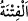

haberi yayıldı. Meryem de bu haberi araştırmak için çıktı ve Fir’avn’un yanına
kimliğini saklayarak girdi. Onlara diyeceğini dedi. Onlar: “Tavsiye ettiğin kadın
kimdir?” deyince, Meryem “Annemi” dedi. “Sütü var mı?” sorusuna da “Evet, kardeşim
Hârun’un sütü.” cevabını verdi. Mûsâ’nın annesi getirildi ve onun memesini kabul etti.
“Böylece seni, gözü gönlü mutluluk dolsun ve üzülmesin diye annene geri verdik.”
ve verdiğimiz sözü yerine getirdik. Bu söz ise “Biz onu sana geri vereceğiz ve onu
peygamberlerden biri yapacağız.” (el-Kasas, 28/7) âyetinde verilen sözdür. Çünkü
Mûsâ’nın annesine gelen ilhâm havassa gelen ilham cinsinden olup vahiy
menzilesindedir. Onun bu mânevî konuşmasını imkânsız görme. Bir rüyâ (müjde veren
bir rüya) ile bu durumun ona haber verilmiş olması da mümkündür.
“Gözü gönlü mutluluk dolsun” yâni seninle buluştuğu için annenin gözü aydın olsun.
Bâzı âlimler bu ifâdenin ‘Seninle buluştuğu için gönlü hoş olsun” anlamında olduğunu
söylemiştir. Göz sıcak değil soğuk yaş döktüğü zaman ‘
’ denir. Aslı budur. Sonra
istiâre olarak sevinç için kullanılmıştır. Burada kasdedilen de budur. Nitekim Bahru’l-
ulûm’da böyle geçmektedir.
“Ve üzülmesin diye” yâni senin ayrılığına üzülmesin diye demektir. Tefsîr-i Kebîr’de
der ki: “Eğer “ve üzülmesin diye” ifâdesi fazlalıktır. Çünkü sevinç mutlaka üzüntüyü
giderir.” denirse, bu ifâdenin anlamı hakkında: ‘Senin ona ulaşmanla annenin gözü gönlü
mutluluk dolsun ve başkasının sütü de senin midene inerek üzülmeyesin diye’ deriz.”
el-İrşâd’da ise şöyle der: “Ve üzülmesin diye” yâni bundan sonra senden ayrılıp da
annene üzüntü ârız olmasın diye. Çünkü üzüntünün gitmesi, “gözü gönlü mutluluk
dolsun” diye ifade edilen sevinçten öncedir. Çünkü tahliye (hı ile, boşaltıp temizlemek),
tahliye (hâ ile, süsleyip bezemekten) öncedir.
“Ve sen birini öldürdün de seni sıkıntıdan kurtardık.” İsrailoğulları’ndan birisi,
Kiptîlerden birisiyle kavga ederken senden yardım istemişti de sen o Kiptî’yi
öldürmüştün. Bu sebeple Allâh’ın vereceği cezâyı ve Fir’avn’un kısas isteyeceğini
düşünerek korkmuştun. Biz seni affettik ve Medyen’e hicretini sağlayarak da Fir’avn’un
seni kısasen öldürmesinden kurtardık. Böylece korkularını giderdik.
“Seni iyiden iyiye denemeden geçirdik.” “
(deneme)”; insana ağır gelen, Allâh’ın
kullarını imtihan etmek için gönderdiği her türlü meşakkat ve sıkıntıdır. Ne var ki Allah
için “
” ismi kullanılmaz. Çünkü bu kelime örfte zemmetmek ve kötülemek için
kullanılır. Ayrıca Allâh’ın isimleri tevkîfîdir.
Eğer “Nimetlerle beraber denemelerin/belaların zikredilmesi nasıl câiz olur?”
denirse şu cevabı veririz: Fitne sıkıntının daha şiddetli hale getirilmesidir. Sıkıntının
artırılması daha çok sevâbı gerektirdiği için Allah onu nimetlerin içinde saymıştır.
Nitekim Peygamber Efendimiz (a.s.): “Hiçbir peygambere bana edilen eziyet
edilmedi.”[76] buyurmuştur. Bâzıları bu hadisi, ‘Hiçbir peygamber benim kadar tasfiye
edilmedi, arıtılıp temizlenmedi’ şeklinde yorumlamıştır.
“
” ifâdesini bâzıları, ‘Biz seni imtihanlarla ezdik, öğüttük’ diye tefsir etmiştir.